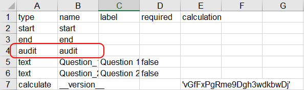

Limiting Responses with Validation Criteria¶
This feature allows you to avoid accidental or invalid answers, especially in numeric questions (Integer or Decimal response types). However, validation can be used on any question. Validation criteria are also sometimes referred to as constraints.
For example, if you want to restrict a question about age to numbers between 0 and 130.
How to add validation criteria¶
Form Builder User Interface
To add validation criteria for a specific question, go to Settings, then Validation Criteria.

You can directly add a condition or manually enter validation logic in XLSFrom code. The type of restrictions under “Add a condition” corresponds to the type of the questions (123 - numbers, text, date) selected. As seen from the example above, the question type is number and the validation criteria restricts the response to be greater than 3 and less than or equal to 30. The Error Message (optional) is the message your interviewer sees when they enter an invalid response.
Validation criteria in XLSForm
Validation criteria in XLSForm needs to be entered in specific syntax
Example Validation Criteria

In the validation criteria syntax, . refers to the current question. ${some_question} refers to the fixed Name of a question, which needs to be set in the Question Options and then surrounded by ${}. See below example:
Examples of More Advanced Validation Criteria

There are many other combinations possible, including advanced mathematical calculations. See here for more details.